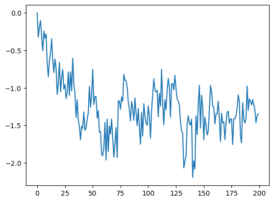
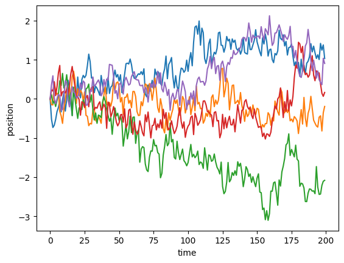
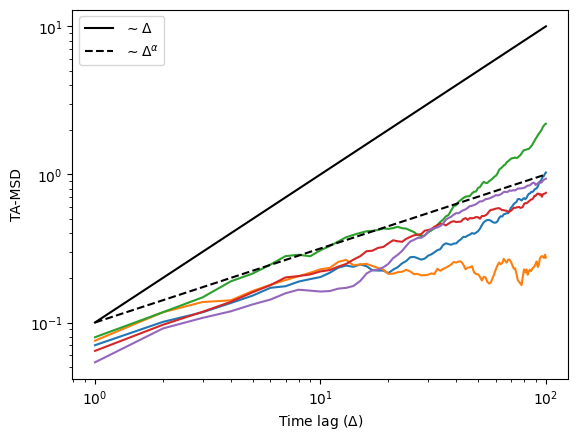
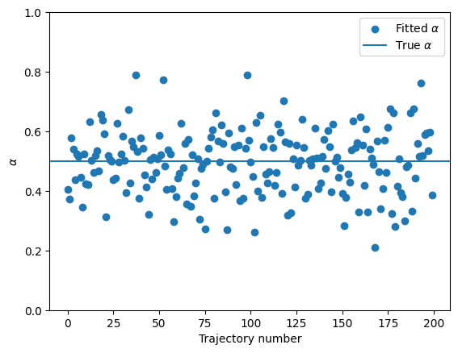
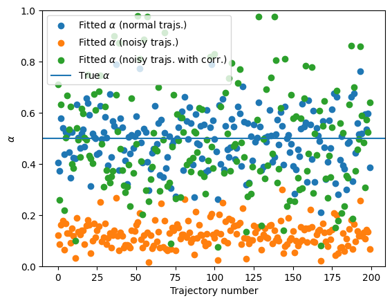
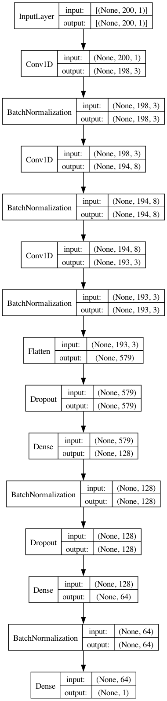
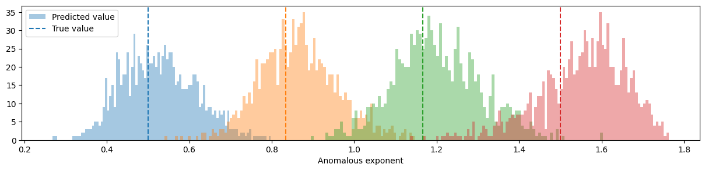

from andi_datasets.models_theory import models_theoryFirsts steps in anomalous diffusion
Characterizing anomalous diffusion and ergodicity breaking from individual trajectories


In this notebook, you will find the basic tools to learn how analyze diffusion from trajectories. First, few simple comments about the andi_datasets package. We will use this python package to create trajectories of different anomalous diffusion models. You can find all details in the documentation webpage.
Let’s start by importing the models_theory module and checking the available anomalous diffusion models.
dimensions = 1
models = models_theory()._oneD()
available_models = inspect.getmembers(models, inspect.ismethod)
print(
"The availailabe models for generating trajectories in "
+ str(dimensions)
+ "D are:\n"
)
for x in available_models:
print("- " + x[0] + "\n")The availailabe models for generating trajectories in 1D are:
- attm
- ctrw
- fbm
- lw
- sbm
The andi-datasets package allows us to generate trajectories according to these five theoretical models. We will learn more about them along the notebook. To generate a single trajectory of, for instance, Fractional Brownian motion (fbm) with anomalous diffusion exponent \(\alpha=0.5\) we just need to do:
T = 200 # Length of the trajectories
alpha = 0.5 # Anomalous diffusion exponent
model = 2 # This corresponds to the index of fbm in the previous list
traj = models.fbm(T=T, alpha=alpha)
plt.plot(traj)
Moreover, the andi_datasets library allows us to create bigger datasets of trajectories with the datasets_theory module. Below, we show how to do this. The object dataset is a numpy matrix whose first two columns indicate the exponent and model of each trajectory (we name them labels) and the rest of the matrix is the trajectory itself (we call it trajs). Let’s check how the first 5 trajectories look like:
from andi_datasets.datasets_theory import datasets_theory
DT = datasets_theory()
N = 200 # Number of trajectories
dataset = DT.create_dataset(T=T, N_models=N, exponents=alpha, models=[2])
labels = dataset[:, :2]
trajs = dataset[:, 2:]
# dispay a few
for traj in trajs[:5]:
plt.plot(traj)
plt.xlabel("time")
plt.ylabel("position")Text(0, 0.5, 'position')
Anomalous diffusion exponent
In this section, we will show the basic tools to estimate the anomalous diffusion exponent of a set of trajectories.
Time-averaged mean squared displacement (TA-MSD)
We will now create a function that calculates the TA-MSD for a given trajectory:
(Note that this function calculates the TA-MSD for a single trajectory. Using the theoretical definition and the function below, can you rewrite the function such that it calculates the TA-MSD for a set of trajectories in an efficient way?)
def TAMSD(traj, t_lags):
"""
Calculates the time average mean squared displacement of a set of trajectories
Inputs: - traj: trajectory to calculate TA-MSD
- t_lags: time lags used for the TA-MSD
Outputs: - TA-MSD
"""
tamsd = np.zeros_like(t_lags, dtype=float)
for idx, t in enumerate(t_lags):
for p in range(len(traj) - t):
tamsd[idx] += (traj[p] - traj[p + t]) ** 2
tamsd[idx] /= len(traj) - t
return tamsdLet’s use the dataset we created above and calculate the TAMSD of each trajectory and plot it in log-scale. As the trajectories have 200 points, let’s choose the time lages \(\Delta \in [1,20]\). In addition, we will also plot two lines: one linearly proportional to the \(\Delta\) and one proportional to \(\Delta^\alpha\). This will give you information about the ergodicity! Can you tell from here if fbm is ergodic or not?
t_lags = np.arange(1, 101)
for traj in trajs[:5]:
tamsd = TAMSD(traj, t_lags)
plt.loglog(t_lags, tamsd)
plt.loglog(t_lags, 0.1 * t_lags, c="k", label=r"$\sim \Delta$")
plt.loglog(t_lags, 0.1 * t_lags**alpha, c="k", ls="--", label=r"$\sim \Delta^\alpha$")
plt.xlabel(r"Time lag ($\Delta$)")
plt.ylabel("TA-MSD")
plt.legend()<matplotlib.legend.Legend>
We can also calculate the ensemble averaged (EA-MSD) and time-ensemble averaged mean squared displacement (TEA-MSD):
## EA-MSD ##
eamsd = np.mean(trajs**2, axis=0)
plt.loglog(eamsd)
plt.loglog(np.arange(1, T), 0.1 * np.arange(1, T), c="k", label=r"$\sim$ time")
plt.loglog(
np.arange(1, T),
0.1 * np.arange(1, T) ** alpha,
c="k",
ls="--",
label=r"$\sim$ time$^\alpha$",
)
plt.xlabel(r"time")
plt.ylabel("EA-MSD")
plt.legend()<matplotlib.legend.Legend>
## TEA-MSD ##
t_lags = np.arange(1, 21)
teamsd = np.zeros_like(t_lags, dtype="float64")
for traj in trajs:
teamsd += TAMSD(traj, t_lags)
teamsd /= N
plt.loglog(t_lags, teamsd, lw=3)
plt.loglog(t_lags, 0.07 * t_lags, c="k", label=r"$\sim \Delta$")
plt.loglog(
t_lags, 0.07 * t_lags**alpha, c="k", ls="--", label=r"$\sim \Delta^\alpha$"
)
plt.xlabel(r"time lag ($\Delta$)")
plt.ylabel("TEA-MSD")
plt.legend()<matplotlib.legend.Legend>A visual inspection seems to tell us that FBM is ergodic! To confirm it, let’s fit the TA-MSD and check if we recover the anomalous diffusion exponent we set above. For that, we will use a fitting function from numpy, performing a linear fit in log-log space:
fitted_alpha = []
for traj in trajs:
tamsd = TAMSD(traj, t_lags)
fitted_alpha.append(np.polyfit(np.log(t_lags), np.log(tamsd), 1)[0])
plt.scatter(range(N), fitted_alpha, label=r"Fitted $\alpha$")
plt.axhline(alpha, label=r"True $\alpha$")
plt.legend()
plt.xlabel("Trajectory number")
plt.ylabel(r"$\alpha$")
plt.ylim(0, 1)(0.0, 1.0)
The TA-MSD fit seems to work…
Trajectories with localization error
The trajectories we used aboved were examples from a purely theoretical fbm. However, in real life, we have the appearance of different sources of noise, for example the localization noise. A simple way of simulating it, consists of adding Gaussian noise to each of the positions of a trajectory. Below, we provide an example with noise with standard deviation $ _{} = 0.5$:
sigma_n = 0.5
noisy_trajs = trajs + np.random.randn(N, T) * sigma_n
plt.plot(trajs[0, :], label="Original trajectory")
plt.plot(noisy_trajs[0, :], label="Noisy trajectory", alpha=0.8)
plt.xlabel("Time")
plt.ylabel("Position")
plt.legend()<matplotlib.legend.Legend>
Let’s see what happens when we try to predict the anomalous diffusion exponent for this noisy trajectories:
fitted_alpha_noisy = []
for traj in noisy_trajs:
tamsd = TAMSD(traj, t_lags)
fitted_alpha_noisy.append(np.polyfit(np.log(t_lags), np.log(tamsd), 1)[0])
plt.scatter(range(N), fitted_alpha, label=r"Fitted $\alpha$ (normal trajs.)")
plt.scatter(range(N), fitted_alpha_noisy, label=r"Fitted $\alpha$ (noisy trajs.)")
plt.axhline(alpha, label=r"True $\alpha$")
plt.legend()
plt.xlabel("Trajectory number")
plt.ylabel(r"$\alpha$")
plt.ylim(0, 1)(0.0, 1.0)You can see that presence of noise largely affects the calculation of the anomalous diffusion exponent. This shows the need for better techniques to correctly characterize anomalous diffusion. In the last part of this notebook, we will show a novel approach based on ML, with much better results! Having an independent estimation of the noise allows for a correction and provides a better quantification of \(\alpha\):
fitted_alpha_noisy_corr = []
for traj in noisy_trajs:
tamsd = TAMSD(traj, t_lags) - 2 * (sigma_n**2)
i_ok = np.where(tamsd > 0)
fitted_alpha_noisy_corr.append(
np.polyfit(np.log(t_lags[i_ok]), np.log(tamsd[i_ok]), 1)[0]
)
plt.scatter(range(N), fitted_alpha, label=r"Fitted $\alpha$ (normal trajs.)")
plt.scatter(range(N), fitted_alpha_noisy, label=r"Fitted $\alpha$ (noisy trajs.)")
plt.scatter(
range(N),
fitted_alpha_noisy_corr,
label=r"Fitted $\alpha$ (noisy trajs. with corr.)",
)
plt.axhline(alpha, label=r"True $\alpha$")
plt.legend()
plt.xlabel("Trajectory number")
plt.ylabel(r"$\alpha$")
plt.ylim(0, 1)(0.0, 1.0)
Ergodicity breaking
So far, we have focused on an ergodic model, FBM. However, there exist diffusion models that break ergodicity. This means that the time-averaged mean squared displacement (TA-MSD) and the ensemble-average mean squared displacement (EA-MSD) are not equivalent. Let’s explore this intriguing feature with a very well known non-ergodic model: the continuous-time random walk (CTRW). We will start by creating a dataset of CTRW trajectories.
T = 200 # Length of the trajectories
N = 1000 # Number of trajectories
alpha = 0.5 # Anomalous diffusion exponent
# Now we want CTRW trajectories (see list of available models above):
model = 1
dataset = DT.create_dataset(T=T, N_models=N, exponents=alpha, models=model)
labels = dataset[:, :2]
trajs = dataset[:, 2:]This is how CTRW trajectories look like. You will recognize the characteristic waiting times.
for traj in trajs[:5]:
plt.plot(traj)
plt.xlabel("Time")
plt.ylabel("Position")Text(0, 0.5, 'Position')
Ensemble-averaged mean squared displacement (EA-MSD)
To showcase the appearance of ergodicity breaking, let’s calculate the EA-MSD and the time-ensemble-averaged mean squared displacement (TEA-MSD). For the former, if all trajectories start at zero, it is as easy as to do the mean of the squared positions. For the latter, we will use the function we defined previously. We will use the same time lags we used for the FBM case.
## EA-MSD ##
eamsd = np.mean(trajs**2, axis=0)
## TEA-MSD ##
t_lags = np.arange(1, 21)
teamsd = np.zeros_like(t_lags, dtype="float64")
for traj in trajs:
teamsd += TAMSD(traj, t_lags)
teamsd /= N
fig, ax = plt.subplots(1, 2, figsize=(10, 5), constrained_layout=True)
ax[0].loglog(t_lags, teamsd)
ax[0].loglog(t_lags, 1.1 * teamsd[0] * t_lags, c="k", label=r"$\sim \Delta$")
ax[0].loglog(
t_lags,
1.1 * teamsd[0] * t_lags**alpha,
c="k",
ls="--",
label=r"$\sim \Delta^\alpha$",
)
plt.setp(ax[0], xlabel=r"Time lag ($\Delta$)", ylabel="TEA-MSD")
ax[0].legend()
ax[1].loglog(eamsd)
ax[1].loglog(np.arange(1, T), eamsd[1] * np.arange(1, T), c="k", label=r"$\sim t$")
ax[1].loglog(
np.arange(1, T),
eamsd[1] * np.arange(1, T) ** alpha,
c="k",
ls="--",
label=r"$\sim t^\alpha$",
)
plt.setp(ax[1], xlabel=r"Time", ylabel="EA-MSD")
ax[1].legend()<matplotlib.legend.Legend>
As we can clearly see, the TEA-MSD scales linearly with the time lags \(\Delta\), while the EA-MSD scales as \(t^\alpha\), thus showing the ergodicity breaking.
Ergodicity breaking parameter
A quantitative approach to ergodicity breaking is the calculation of the ergodicity breaking parameter (EB). Here is how to calculate it:
def EB(trajs, t_lag):
eb = []
# We loop over T, which is the point at which we cut the trajectory
for T in range(t_lag + 1, trajs.shape[1]):
cut_trajs = trajs[:, :T]
# Now we calculate the TAMSD for every trajectory at the
# given t_lag
tamsd = np.zeros(trajs.shape[0])
for idx, traj in enumerate(cut_trajs):
for p in range(len(traj) - t_lag):
tamsd[idx] += (traj[p] - traj[p + t_lag]) ** 2
tamsd /= len(traj) - t_lag
# Compute EB and append
eb.append(np.mean(tamsd**2) / np.mean(tamsd) ** 2 - 1)
return ebLet’s compute the EB for trajectories similar to the ones we used in the previous section. The expected value at \(t\rightarrow\infty\) is given by Eq.(8) of this paper and for \(\alpha = 0.5\) we should have EB \(\approx 0.570\). Let’s also simulate some FBM trajectories to check that for ergodic processes, the EB goes to zero even when the anomalous diffusion exponent is different than one. We will use as time lag \(\Delta = 2\). You can check the effect of varying \(\Delta\) on the EB in the previous paper (see e.g. Fig. 2(b)).
Note: the EB is rather slowe to calculate because it requires a few loops. If you managed to create the efficient function for the TA-MSD, now is the time to use it!
T = 200 # Length of the trajectories
N = 500 # Number of trajectories
alpha = 0.5 # Anomalous diffusion exponent
fbm = DT.create_dataset(T=T, N_models=N, exponents=alpha, models=2)[:, 2:]
ctrw = DT.create_dataset(T=T, N_models=N, exponents=alpha, models=1)[:, 2:]EB_ctrw = EB(ctrw, t_lag=2)
EB_fbm = EB(fbm, t_lag=2)plt.plot(EB_ctrw, label="CTRW")
plt.plot(EB_fbm, label="FBM")
plt.axhline(0.570, c="k", alpha=0.4, label=r"EB($t\rightarrow\infty$) CTRW")
plt.ylabel("EB(t)")
plt.xlabel("Time")
plt.legend()<matplotlib.legend.Legend>
As you can see, the EB for the FBM trajectories quickly goes to 0. However, for the CTRW it displays a value different than zero that will converge to the theoretical value if we consider much longer trajectories. Feel free to explore how long you have to wait until reaching such value!
Machine learning approach to single trajectory characterization
As we just saw, analyzing diffusion processes at the single trajectory level has many problems related to, e.g. noise, trajectory length, ergodicity breaking,… In the last years, we have seen how machine learning can help us solve many of this. Here, we will show an example on how to use a convolutional neural network to estimate the anomalous diffusion exponent of a dataset of trajectories.
Training and test dataset
Let’s start by creating the datasets that we will use for training and evaluating the trained machine. We will consider for this example a dataset of FBM trajectories, with exponents \(\in [0.2,1.4]\) and length of 200 steps. For the training, we need a big dataset so we will generate 10000 trajectories:
num_alphas = 100
exponents = np.linspace(0.2, 1.81, num_alphas)
N_models = (
100 # this is the number of trajectories per exponent, which makes a total of 10000
)
T = 200 # Length of the trajectories
dataset = DT.create_dataset(T=T, N_models=N_models, exponents=exponents, models=2)We will now transform the previous dataset to a machine learning dataset which we can then input to the neural network. The shape constraints are set by the machines that we will define later. Moreover, we will split the trajectories into a training and validation datasets with a 80%/20% ratio. We will use the function normalize from the andi-datasets package to ensure that all the trajectories are on the same scale. This function divides the displacements of a trajectory by their standard deviation. While this operation changes the diffusion coefficient of any trajectory to \(D=1\), the anomalous diffusion exponent remains the same. Furthermore, it is also important to randomly shuffle our dataset.
from andi_datasets.utils_trajectories import normalize
ratio = int(0.8 * dataset.shape[0])
np.random.shuffle(dataset)
# NN inputs: trajectories
X_train = normalize(dataset[:ratio, 2:]).reshape(ratio, T, 1)
X_valid = normalize(dataset[ratio:, 2:]).reshape(N - ratio, T, 1)
# NN outputs: their anomalous exponent
Y_train = dataset[:ratio, 1]
Y_valid = dataset[ratio:, 1]Convolutional neural network architecture
from keras.models import Sequential, Model
from keras.layers import Dense, Dropout, Conv1D, Flatten, BatchNormalization
from keras.optimizers import Adam
from keras.regularizers import l2 as regularizer_l2
model = Sequential()
model.add(
Conv1D(
filters=3,
kernel_size=3,
strides=1,
input_shape=(T, 1),
kernel_initializer="uniform",
activation="relu",
kernel_regularizer=regularizer_l2(l=0.001),
)
)
model.add(BatchNormalization(axis=-1, momentum=0.99, epsilon=0.001))
model.add(
Conv1D(
filters=8,
kernel_size=5,
strides=1,
kernel_initializer="uniform",
activation="relu",
kernel_regularizer=regularizer_l2(l=0.001),
)
)
model.add(BatchNormalization(axis=-1, momentum=0.99, epsilon=0.001))
model.add(
Conv1D(
filters=3,
kernel_size=2,
strides=1,
kernel_initializer="uniform",
activation="relu",
kernel_regularizer=regularizer_l2(l=0.001),
)
)
model.add(BatchNormalization(axis=-1, momentum=0.99, epsilon=0.001))
model.add(Flatten())
model.add(Dropout(0.5))
model.add(
Dense(64 * 2, activation="sigmoid", kernel_regularizer=regularizer_l2(l=0.001))
)
model.add(BatchNormalization(axis=-1, momentum=0.99, epsilon=0.001))
model.add(Dropout(0.5))
model.add(Dense(64, activation="sigmoid"))
model.add(BatchNormalization(axis=-1, momentum=0.99, epsilon=0.001))2023-11-14 19:09:03.088654: I tensorflow/core/platform/cpu_feature_guard.cc:182] This TensorFlow binary is optimized to use available CPU instructions in performance-critical operations.
To enable the following instructions: AVX2 FMA, in other operations, rebuild TensorFlow with the appropriate compiler flags.We want to predict the anomalous diffusion exponent, therefore the output layer needs to have size one. Since we are performing a regression, it is also important that its activation function is linear.
model.add(Dense(1, activation="linear"))Now that we have all the layers, we can take a look at a visual summary of the CNN. The plot below also gives us the input/output shape for every layer.
from keras.utils import plot_model
plot_model(model, show_shapes=True, show_layer_names=False)
Let’s compile the network. For the loss function, we will use the mean absolute error (MAE). Another possible choice is the mean squared error (MSE). We will keep track of it as metric. We will use Adam as optimizer.
model.compile(loss="mean_absolute_error", optimizer=Adam())We are ready to start the training!
batch_size = 200
epochs = 150
training = model.fit(
X_train,
Y_train,
batch_size=batch_size,
epochs=epochs,
verbose=2,
validation_data=(X_valid, Y_valid),
)Epoch 1/150
40/40 - 4s - loss: 1.0776 - val_loss: 1.0489 - 4s/epoch - 95ms/step
Epoch 2/150
40/40 - 1s - loss: 0.6571 - val_loss: 0.6707 - 924ms/epoch - 23ms/step
Epoch 3/150
40/40 - 1s - loss: 0.5107 - val_loss: 0.5904 - 930ms/epoch - 23ms/step
Epoch 4/150
40/40 - 1s - loss: 0.4412 - val_loss: 0.5660 - 979ms/epoch - 24ms/step
Epoch 5/150
40/40 - 1s - loss: 0.4746 - val_loss: 0.5355 - 960ms/epoch - 24ms/step
Epoch 6/150
40/40 - 1s - loss: 0.4391 - val_loss: 0.5038 - 1s/epoch - 26ms/step
Epoch 7/150
40/40 - 1s - loss: 0.4058 - val_loss: 0.4957 - 1s/epoch - 25ms/step
Epoch 8/150
40/40 - 1s - loss: 0.3720 - val_loss: 0.4970 - 978ms/epoch - 24ms/step
Epoch 9/150
40/40 - 1s - loss: 0.3379 - val_loss: 0.4810 - 1s/epoch - 28ms/step
Epoch 10/150
40/40 - 1s - loss: 0.3009 - val_loss: 0.4905 - 1s/epoch - 25ms/step
Epoch 11/150
40/40 - 1s - loss: 0.2737 - val_loss: 0.4872 - 1s/epoch - 27ms/step
Epoch 12/150
40/40 - 1s - loss: 0.2662 - val_loss: 0.4298 - 1s/epoch - 30ms/step
Epoch 13/150
40/40 - 1s - loss: 0.2577 - val_loss: 0.4815 - 1s/epoch - 30ms/step
Epoch 14/150
40/40 - 1s - loss: 0.2298 - val_loss: 0.4412 - 1s/epoch - 28ms/step
Epoch 15/150
40/40 - 1s - loss: 0.2446 - val_loss: 0.7912 - 1s/epoch - 29ms/step
Epoch 16/150
40/40 - 1s - loss: 0.2358 - val_loss: 0.3735 - 1s/epoch - 31ms/step
Epoch 17/150
40/40 - 1s - loss: 0.2182 - val_loss: 0.7752 - 1s/epoch - 33ms/step
Epoch 18/150
40/40 - 1s - loss: 0.3127 - val_loss: 0.5923 - 1s/epoch - 33ms/step
Epoch 19/150
40/40 - 1s - loss: 0.2710 - val_loss: 0.5222 - 1s/epoch - 31ms/step
Epoch 20/150
40/40 - 1s - loss: 0.2604 - val_loss: 0.4660 - 1s/epoch - 34ms/step
Epoch 21/150
40/40 - 1s - loss: 0.2501 - val_loss: 0.4412 - 1s/epoch - 33ms/step
Epoch 22/150
40/40 - 1s - loss: 0.2353 - val_loss: 0.3730 - 1s/epoch - 33ms/step
Epoch 23/150
40/40 - 1s - loss: 0.2254 - val_loss: 0.4952 - 1s/epoch - 32ms/step
Epoch 24/150
40/40 - 1s - loss: 0.2157 - val_loss: 0.4668 - 1s/epoch - 34ms/step
Epoch 25/150
40/40 - 1s - loss: 0.1893 - val_loss: 0.7237 - 1s/epoch - 35ms/step
Epoch 26/150
40/40 - 1s - loss: 0.1861 - val_loss: 0.6026 - 1s/epoch - 36ms/step
Epoch 27/150
40/40 - 1s - loss: 0.1741 - val_loss: 0.6197 - 1s/epoch - 37ms/step
Epoch 28/150
40/40 - 2s - loss: 0.1644 - val_loss: 0.4755 - 2s/epoch - 40ms/step
Epoch 29/150
40/40 - 1s - loss: 0.1596 - val_loss: 0.6264 - 1s/epoch - 34ms/step
Epoch 30/150
40/40 - 1s - loss: 0.1537 - val_loss: 0.4262 - 1s/epoch - 37ms/step
Epoch 31/150
40/40 - 2s - loss: 0.1474 - val_loss: 0.3201 - 2s/epoch - 41ms/step
Epoch 32/150
40/40 - 2s - loss: 0.1631 - val_loss: 0.4230 - 2s/epoch - 42ms/step
Epoch 33/150
40/40 - 2s - loss: 0.1718 - val_loss: 0.4186 - 2s/epoch - 45ms/step
Epoch 34/150
40/40 - 2s - loss: 0.1615 - val_loss: 0.4465 - 2s/epoch - 44ms/step
Epoch 35/150
40/40 - 2s - loss: 0.1510 - val_loss: 0.4831 - 2s/epoch - 43ms/step
Epoch 36/150
40/40 - 2s - loss: 0.1481 - val_loss: 0.4437 - 2s/epoch - 44ms/step
Epoch 37/150
40/40 - 2s - loss: 0.1422 - val_loss: 0.3656 - 2s/epoch - 44ms/step
Epoch 38/150
40/40 - 2s - loss: 0.1359 - val_loss: 0.3648 - 2s/epoch - 42ms/step
Epoch 39/150
40/40 - 2s - loss: 0.1335 - val_loss: 0.2728 - 2s/epoch - 44ms/step
Epoch 40/150
40/40 - 2s - loss: 0.1266 - val_loss: 0.1640 - 2s/epoch - 45ms/step
Epoch 41/150
40/40 - 2s - loss: 0.1275 - val_loss: 0.1925 - 2s/epoch - 44ms/step
Epoch 42/150
40/40 - 2s - loss: 0.1220 - val_loss: 0.1425 - 2s/epoch - 42ms/step
Epoch 43/150
40/40 - 2s - loss: 0.1220 - val_loss: 0.1806 - 2s/epoch - 44ms/step
Epoch 44/150
40/40 - 2s - loss: 0.1166 - val_loss: 0.1944 - 2s/epoch - 45ms/step
Epoch 45/150
40/40 - 1s - loss: 0.1182 - val_loss: 0.3756 - 1s/epoch - 34ms/step
Epoch 46/150
40/40 - 1s - loss: 0.1166 - val_loss: 0.1599 - 1s/epoch - 35ms/step
Epoch 47/150
40/40 - 1s - loss: 0.1119 - val_loss: 0.1603 - 1s/epoch - 35ms/step
Epoch 48/150
40/40 - 1s - loss: 0.1176 - val_loss: 0.1493 - 1s/epoch - 37ms/step
Epoch 49/150
40/40 - 1s - loss: 0.1217 - val_loss: 0.3627 - 1s/epoch - 32ms/step
Epoch 50/150
40/40 - 1s - loss: 0.1188 - val_loss: 0.1309 - 1s/epoch - 30ms/step
Epoch 51/150
40/40 - 1s - loss: 0.1176 - val_loss: 0.1973 - 1s/epoch - 36ms/step
Epoch 52/150
40/40 - 1s - loss: 0.1205 - val_loss: 0.1243 - 1s/epoch - 35ms/step
Epoch 53/150
40/40 - 2s - loss: 0.1118 - val_loss: 0.1669 - 2s/epoch - 41ms/step
Epoch 54/150
40/40 - 2s - loss: 0.1157 - val_loss: 0.1736 - 2s/epoch - 39ms/step
Epoch 55/150
40/40 - 1s - loss: 0.1120 - val_loss: 0.1066 - 1s/epoch - 37ms/step
Epoch 56/150
40/40 - 2s - loss: 0.1099 - val_loss: 0.1359 - 2s/epoch - 39ms/step
Epoch 57/150
40/40 - 2s - loss: 0.1063 - val_loss: 0.1376 - 2s/epoch - 41ms/step
Epoch 58/150
40/40 - 2s - loss: 0.1122 - val_loss: 0.1726 - 2s/epoch - 40ms/step
Epoch 59/150
40/40 - 2s - loss: 0.1074 - val_loss: 0.1334 - 2s/epoch - 38ms/step
Epoch 60/150
40/40 - 1s - loss: 0.1116 - val_loss: 0.1161 - 1s/epoch - 35ms/step
Epoch 61/150
40/40 - 1s - loss: 0.1095 - val_loss: 0.1588 - 1s/epoch - 35ms/step
Epoch 62/150
40/40 - 1s - loss: 0.1080 - val_loss: 0.1213 - 1s/epoch - 35ms/step
Epoch 63/150
40/40 - 1s - loss: 0.1053 - val_loss: 0.1313 - 1s/epoch - 34ms/step
Epoch 64/150
40/40 - 1s - loss: 0.1064 - val_loss: 0.1111 - 1s/epoch - 34ms/step
Epoch 65/150
40/40 - 2s - loss: 0.1043 - val_loss: 0.1004 - 2s/epoch - 38ms/step
Epoch 66/150
40/40 - 1s - loss: 0.1023 - val_loss: 0.0952 - 1s/epoch - 37ms/step
Epoch 67/150
40/40 - 2s - loss: 0.1076 - val_loss: 0.1418 - 2s/epoch - 39ms/step
Epoch 68/150
40/40 - 2s - loss: 0.1083 - val_loss: 0.1502 - 2s/epoch - 42ms/step
Epoch 69/150
40/40 - 2s - loss: 0.1068 - val_loss: 0.1323 - 2s/epoch - 40ms/step
Epoch 70/150
40/40 - 1s - loss: 0.1067 - val_loss: 0.2158 - 1s/epoch - 34ms/step
Epoch 71/150
40/40 - 2s - loss: 0.1054 - val_loss: 0.0978 - 2s/epoch - 42ms/step
Epoch 72/150
40/40 - 2s - loss: 0.1031 - val_loss: 0.1014 - 2s/epoch - 44ms/step
Epoch 73/150
40/40 - 2s - loss: 0.1034 - val_loss: 0.1709 - 2s/epoch - 45ms/step
Epoch 74/150
40/40 - 2s - loss: 0.1033 - val_loss: 0.1046 - 2s/epoch - 44ms/step
Epoch 75/150
40/40 - 2s - loss: 0.1032 - val_loss: 0.1073 - 2s/epoch - 43ms/step
Epoch 76/150
40/40 - 2s - loss: 0.1031 - val_loss: 0.1120 - 2s/epoch - 43ms/step
Epoch 77/150
40/40 - 2s - loss: 0.1036 - val_loss: 0.1003 - 2s/epoch - 45ms/step
Epoch 78/150
40/40 - 2s - loss: 0.1069 - val_loss: 0.1085 - 2s/epoch - 46ms/step
Epoch 79/150
40/40 - 2s - loss: 0.1032 - val_loss: 0.1251 - 2s/epoch - 48ms/step
Epoch 80/150
40/40 - 2s - loss: 0.1031 - val_loss: 0.1122 - 2s/epoch - 47ms/step
Epoch 81/150
40/40 - 2s - loss: 0.0997 - val_loss: 0.0950 - 2s/epoch - 47ms/step
Epoch 82/150
40/40 - 2s - loss: 0.1032 - val_loss: 0.1099 - 2s/epoch - 49ms/step
Epoch 83/150
40/40 - 2s - loss: 0.1058 - val_loss: 0.1288 - 2s/epoch - 54ms/step
Epoch 84/150
40/40 - 2s - loss: 0.1010 - val_loss: 0.1032 - 2s/epoch - 48ms/step
Epoch 85/150
40/40 - 2s - loss: 0.1064 - val_loss: 0.3960 - 2s/epoch - 51ms/step
Epoch 86/150
40/40 - 2s - loss: 0.1077 - val_loss: 0.3022 - 2s/epoch - 51ms/step
Epoch 87/150
40/40 - 2s - loss: 0.1078 - val_loss: 0.1335 - 2s/epoch - 49ms/step
Epoch 88/150
40/40 - 2s - loss: 0.1049 - val_loss: 0.1304 - 2s/epoch - 50ms/step
Epoch 89/150
40/40 - 2s - loss: 0.1049 - val_loss: 0.1388 - 2s/epoch - 54ms/step
Epoch 90/150
40/40 - 2s - loss: 0.1050 - val_loss: 0.1238 - 2s/epoch - 55ms/step
Epoch 91/150
40/40 - 2s - loss: 0.1059 - val_loss: 0.1098 - 2s/epoch - 56ms/step
Epoch 92/150
40/40 - 2s - loss: 0.1075 - val_loss: 0.1322 - 2s/epoch - 48ms/step
Epoch 93/150
40/40 - 2s - loss: 0.1015 - val_loss: 0.0992 - 2s/epoch - 50ms/step
Epoch 94/150
40/40 - 2s - loss: 0.1040 - val_loss: 0.1460 - 2s/epoch - 45ms/step
Epoch 95/150
40/40 - 2s - loss: 0.1038 - val_loss: 0.1273 - 2s/epoch - 45ms/step
Epoch 96/150
40/40 - 2s - loss: 0.1057 - val_loss: 0.1482 - 2s/epoch - 44ms/step
Epoch 97/150
40/40 - 2s - loss: 0.1042 - val_loss: 0.0913 - 2s/epoch - 43ms/step
Epoch 98/150
40/40 - 2s - loss: 0.1009 - val_loss: 0.1003 - 2s/epoch - 47ms/step
Epoch 99/150
40/40 - 2s - loss: 0.1037 - val_loss: 0.1466 - 2s/epoch - 46ms/step
Epoch 100/150
40/40 - 2s - loss: 0.1016 - val_loss: 0.0858 - 2s/epoch - 48ms/step
Epoch 101/150
40/40 - 2s - loss: 0.1007 - val_loss: 0.0930 - 2s/epoch - 45ms/step
Epoch 102/150
40/40 - 2s - loss: 0.1013 - val_loss: 0.0959 - 2s/epoch - 51ms/step
Epoch 103/150
40/40 - 2s - loss: 0.1007 - val_loss: 0.1000 - 2s/epoch - 49ms/step
Epoch 104/150
40/40 - 2s - loss: 0.0993 - val_loss: 0.0902 - 2s/epoch - 48ms/step
Epoch 105/150
40/40 - 2s - loss: 0.1024 - val_loss: 0.0910 - 2s/epoch - 49ms/step
Epoch 106/150
40/40 - 2s - loss: 0.1030 - val_loss: 0.0924 - 2s/epoch - 49ms/step
Epoch 107/150
40/40 - 2s - loss: 0.1003 - val_loss: 0.0903 - 2s/epoch - 52ms/step
Epoch 108/150
40/40 - 2s - loss: 0.0992 - val_loss: 0.0949 - 2s/epoch - 50ms/step
Epoch 109/150
40/40 - 2s - loss: 0.1033 - val_loss: 0.0903 - 2s/epoch - 49ms/step
Epoch 110/150
40/40 - 2s - loss: 0.0993 - val_loss: 0.0923 - 2s/epoch - 51ms/step
Epoch 111/150
40/40 - 2s - loss: 0.0990 - val_loss: 0.0841 - 2s/epoch - 55ms/step
Epoch 112/150
40/40 - 2s - loss: 0.0988 - val_loss: 0.0877 - 2s/epoch - 52ms/step
Epoch 113/150
40/40 - 2s - loss: 0.0980 - val_loss: 0.0974 - 2s/epoch - 54ms/step
Epoch 114/150
40/40 - 2s - loss: 0.0997 - val_loss: 0.0953 - 2s/epoch - 56ms/step
Epoch 115/150
40/40 - 2s - loss: 0.0990 - val_loss: 0.1004 - 2s/epoch - 56ms/step
Epoch 116/150
40/40 - 2s - loss: 0.1007 - val_loss: 0.0956 - 2s/epoch - 61ms/step
Epoch 117/150
40/40 - 2s - loss: 0.1006 - val_loss: 0.1016 - 2s/epoch - 47ms/step
Epoch 118/150
40/40 - 2s - loss: 0.1027 - val_loss: 0.0995 - 2s/epoch - 51ms/step
Epoch 119/150
40/40 - 2s - loss: 0.0983 - val_loss: 0.1040 - 2s/epoch - 47ms/step
Epoch 120/150
40/40 - 2s - loss: 0.0987 - val_loss: 0.1108 - 2s/epoch - 41ms/step
Epoch 121/150
40/40 - 2s - loss: 0.1021 - val_loss: 0.0987 - 2s/epoch - 40ms/step
Epoch 122/150
40/40 - 2s - loss: 0.0967 - val_loss: 0.0907 - 2s/epoch - 39ms/step
Epoch 123/150
40/40 - 2s - loss: 0.1022 - val_loss: 0.1021 - 2s/epoch - 39ms/step
Epoch 124/150
40/40 - 2s - loss: 0.1006 - val_loss: 0.0961 - 2s/epoch - 47ms/step
Epoch 125/150
40/40 - 2s - loss: 0.1004 - val_loss: 0.1090 - 2s/epoch - 45ms/step
Epoch 126/150
40/40 - 2s - loss: 0.1039 - val_loss: 0.0967 - 2s/epoch - 49ms/step
Epoch 127/150
40/40 - 2s - loss: 0.1018 - val_loss: 0.0919 - 2s/epoch - 49ms/step
Epoch 128/150
40/40 - 2s - loss: 0.0998 - val_loss: 0.0915 - 2s/epoch - 46ms/step
Epoch 129/150
40/40 - 2s - loss: 0.0997 - val_loss: 0.0976 - 2s/epoch - 54ms/step
Epoch 130/150
40/40 - 2s - loss: 0.0986 - val_loss: 0.0926 - 2s/epoch - 47ms/step
Epoch 131/150
40/40 - 2s - loss: 0.0987 - val_loss: 0.0999 - 2s/epoch - 40ms/step
Epoch 132/150
40/40 - 1s - loss: 0.0962 - val_loss: 0.0829 - 1s/epoch - 37ms/step
Epoch 133/150
40/40 - 2s - loss: 0.1017 - val_loss: 0.1017 - 2s/epoch - 40ms/step
Epoch 134/150
40/40 - 2s - loss: 0.0991 - val_loss: 0.0955 - 2s/epoch - 44ms/step
Epoch 135/150
40/40 - 2s - loss: 0.0962 - val_loss: 0.0911 - 2s/epoch - 41ms/step
Epoch 136/150
40/40 - 2s - loss: 0.0985 - val_loss: 0.0968 - 2s/epoch - 46ms/step
Epoch 137/150
40/40 - 2s - loss: 0.0971 - val_loss: 0.1021 - 2s/epoch - 46ms/step
Epoch 138/150
40/40 - 2s - loss: 0.0976 - val_loss: 0.0908 - 2s/epoch - 46ms/step
Epoch 139/150
40/40 - 2s - loss: 0.0985 - val_loss: 0.1038 - 2s/epoch - 38ms/step
Epoch 140/150
40/40 - 1s - loss: 0.0971 - val_loss: 0.0885 - 1s/epoch - 31ms/step
Epoch 141/150
40/40 - 2s - loss: 0.0934 - val_loss: 0.0890 - 2s/epoch - 43ms/step
Epoch 142/150
40/40 - 2s - loss: 0.0993 - val_loss: 0.0831 - 2s/epoch - 46ms/step
Epoch 143/150
40/40 - 2s - loss: 0.0981 - val_loss: 0.0970 - 2s/epoch - 48ms/step
Epoch 144/150
40/40 - 2s - loss: 0.0966 - val_loss: 0.0892 - 2s/epoch - 47ms/step
Epoch 145/150
40/40 - 2s - loss: 0.0959 - val_loss: 0.0887 - 2s/epoch - 48ms/step
Epoch 146/150
40/40 - 2s - loss: 0.0968 - val_loss: 0.0868 - 2s/epoch - 52ms/step
Epoch 147/150
40/40 - 2s - loss: 0.0950 - val_loss: 0.0898 - 2s/epoch - 46ms/step
Epoch 148/150
40/40 - 2s - loss: 0.0994 - val_loss: 0.0963 - 2s/epoch - 45ms/step
Epoch 149/150
40/40 - 2s - loss: 0.0984 - val_loss: 0.0879 - 2s/epoch - 49ms/step
Epoch 150/150
40/40 - 2s - loss: 0.0930 - val_loss: 0.0867 - 2s/epoch - 48ms/stepTo see if the training worked, let’s take a look at the training and validation dataset loss:
acc = training.history["loss"]
val_acc = training.history["val_loss"]
plt.plot(np.arange(len(training.history["loss"])), acc, label="Training loss")
plt.plot(np.arange(len(training.history["loss"])), val_acc, label="Validation loss")
plt.xlabel("Epochs")
plt.ylabel("Accuracy")
plt.legend()<matplotlib.legend.Legend>Let’s create a test dataset with few exponents and check the predictions:
test_exponents = np.linspace(0.5, 1.5, 4)
test_dataset = DT.create_dataset(T=T, N_models=1000, exponents=test_exponents, models=2)
X_test = normalize(test_dataset[:, 2:]).reshape(test_dataset.shape[0], T, 1)
Y_test = test_dataset[:, 1]
preds_test = model.predict(X_test)125/125 [==============================] - 1s 3ms/stepNow we can plot de distribution of predicted exponents for each of the groundtruth ones:
fig, ax = plt.subplots(figsize=(15, 3))
for idx, u in enumerate(np.unique(Y_test)):
ax.hist(
preds_test[Y_test == u],
facecolor=f"C{idx}",
bins=100,
alpha=0.4,
label="Predicted value" if idx == 0 else "",
)
plt.axvline(u, ls="--", c=f"C{idx}", label="True value" if idx == 0 else "")
plt.legend()
plt.xlabel("Anomalous exponent")Text(0.5, 0, 'Anomalous exponent')
The methods is able to predict the exponent quite correctly! Can you improve the model? Give it a try!
Extracting other parameters with ML
Now that we have defined our network, it is really easy to transform it for any other task. For instance, let’s see how to create a machine that distinguishes between ergodic and non-ergodic trajectories. First, we need to create a new dataset with all the andi-datasets diffusion models. Due to the constraints of the package, we will need to create the subdiffusive and superdiffusive datasets separately and then merge them:
N = 200 # this is the number of trajectories per exponent, which makes a total of 10000
T = 200 # Length of the trajectories
subdiffusive_exponents = np.arange(0.2, 1, 0.2) # We only consider subdiffusion
subdiffusive_models = [0, 1, 2, 4] # All models but LW
sub_dataset = DT.create_dataset(
T=T, N_models=N, exponents=subdiffusive_exponents, models=subdiffusive_models
)
superdiffusive_exponents = np.arange(1, 2, 0.2) # We only consider superdiffusion
superdiffusive_models = [2, 3, 4] # All models but CTRW and ATTM
super_dataset = DT.create_dataset(
T=T, N_models=N, exponents=superdiffusive_exponents, models=superdiffusive_models
)
dataset = np.vstack((sub_dataset, super_dataset))The labels now need to be transform such that for ATTM, CTRW and SBM we have 0 (non-ergodic) and for FBM and LW we will have 1 (ergodic):
ratio = int(0.8 * dataset.shape[0])
np.random.shuffle(dataset)
# NN inputs: trajectories
X_train = normalize(dataset[:ratio, 2:]).reshape(ratio, T, 1)
X_valid = normalize(dataset[ratio:, 2:]).reshape(N - ratio, T, 1)
# NN outputs
# First we take the models
Y_train = dataset[:ratio, 0]
Y_valid = dataset[ratio:, 0]
where_ergodic = np.argwhere((Y_train == 2) | (Y_train == 3))
where_nonergodic = np.argwhere((Y_train == 0) | (Y_train == 1) | (Y_train == 4))
Y_train[where_ergodic] = 0
Y_train[where_nonergodic] = 0
where_ergodic = np.argwhere((Y_valid == 2) | (Y_valid == 3))
where_nonergodic = np.argwhere((Y_valid == 0) | (Y_valid == 1) | (Y_valid == 4))
Y_valid[where_ergodic] = 0
Y_valid[where_nonergodic] = 0Finally, we can use the same architecture as before, but will need to change the last layer to two neurons with softmax activation, as e.g.:
model.add(Dense(2, activation="softmax"))Are you ready to train the newtwork by yourself?